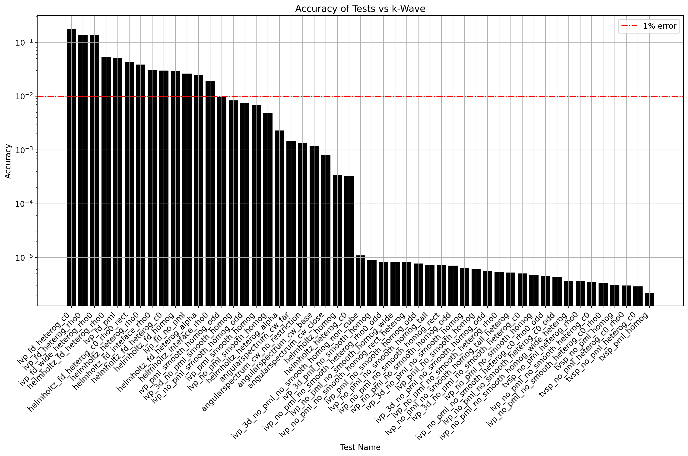

Test Accuracy

| test name | Accuracy |
|---|---|
| ivp_fd_heterog_c0 | 1.80e-01 |
| ivp_fd_heterog_rho0 | 1.39e-01 |
| ivp_fd_wide_heterog_rho0 | 1.39e-01 |
| helmholtz_fd_heterog_rho0 | 5.35e-02 |
| ivp_fd_pml | 5.14e-02 |
| helmholtz_fd_heterog_c0_rho0_rect | 4.28e-02 |
| helmholtz_heterog_rho0 | 3.88e-02 |
| helmholtz_fd_inteface_rho0 | 3.10e-02 |
| helmholtz_fd_heterog_c0 | 3.01e-02 |
| helmholtz_fd_homog | 2.96e-02 |
| ivp_fd_no_pml | 2.65e-02 |
| helmholtz_fd_heterog_alpha | 2.50e-02 |
| helmholtz_inteface_rho0 | 1.94e-02 |
| ivp_pml_smooth_homog_odd | 9.81e-03 |
| ivp_3d_no_pml_smooth_homog | 8.37e-03 |
| ivp_no_pml_smooth_homog_odd | 7.42e-03 |
| ivp_pml_smooth_homog | 6.89e-03 |
| ivp_no_pml_smooth_homog | 4.82e-03 |
| helmholtz_heterog_alpha | 2.31e-03 |
| angularspectrum_cw_far | 1.49e-03 |
| angularspectrum_cw_no_restriction | 1.34e-03 |
| angularspectrum_cw_base | 1.18e-03 |
| angularspectrum_cw_close | 7.97e-04 |
| helmholtz_homog | 3.38e-04 |
| helmholtz_heterog_c0 | 3.23e-04 |
| ivp_3d_no_pml_no_smooth_homog_non_cube | 1.09e-05 |
| ivp_3d_pml_no_smooth_homog | 8.92e-06 |
| ivp_no_pml_no_smooth_heterog_rho0_odd | 8.36e-06 |
| ivp_no_pml_no_smooth_homog_wide | 8.32e-06 |
| ivp_no_pml_no_smooth_homog_rect_heterog | 8.13e-06 |
| ivp_pml_no_smooth_homog_odd | 7.77e-06 |
| ivp_no_pml_no_smooth_homog_tall | 7.41e-06 |
| ivp_no_pml_no_smooth_homog_rect | 7.20e-06 |
| ivp_no_pml_no_smooth_homog_odd | 7.08e-06 |
| ivp_3d_no_pml_no_smooth_homog | 6.44e-06 |
| ivp_pml_no_smooth_homog | 6.13e-06 |
| ivp_3d_no_pml_no_smooth_homog_odd | 5.69e-06 |
| ivp_no_pml_no_smooth_heterog_rho0 | 5.36e-06 |
| ivp_no_pml_no_smooth_homog_tall_heterog | 5.26e-06 |
| ivp_3d_no_pml_no_smooth_heterog_c0 | 5.07e-06 |
| ivp_no_pml_no_smooth_homog | 4.77e-06 |
| ivp_no_pml_no_smooth_heterog_c0_rho0_odd | 4.52e-06 |
| ivp_no_pml_no_smooth_heterog_c0_odd | 4.31e-06 |
| ivp_no_pml_no_smooth_homog_wide_heterog | 3.73e-06 |
| tvsp_no_pml_heterog_rho0 | 3.63e-06 |
| ivp_no_pml_no_smooth_heterog_c0 | 3.54e-06 |
| ivp_no_pml_no_smooth_heterog_c0_rho0 | 3.33e-06 |
| tvsp_no_pml_homog | 3.05e-06 |
| tvsp_no_pml_heterog_c0_rho0 | 3.04e-06 |
| tvsp_no_pml_heterog_c0 | 2.92e-06 |
| tvsp_pml_homog | 2.22e-06 |